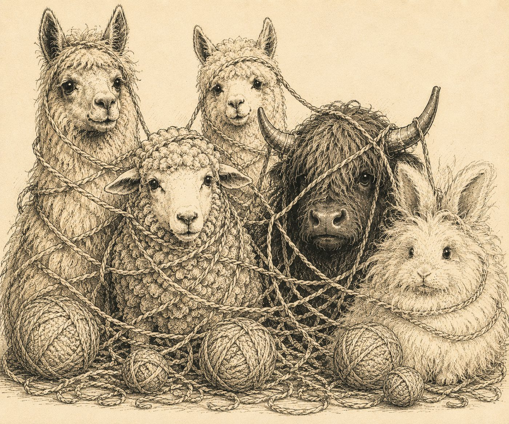

Start with the yarn you already have
What can I make?
Choose a brand and yarn to see its details, skein estimates, and matching patterns.
Choose your yarn
For substitution matches, a swatch gauge is more reliable than estimating the thickness of two yarns held together.